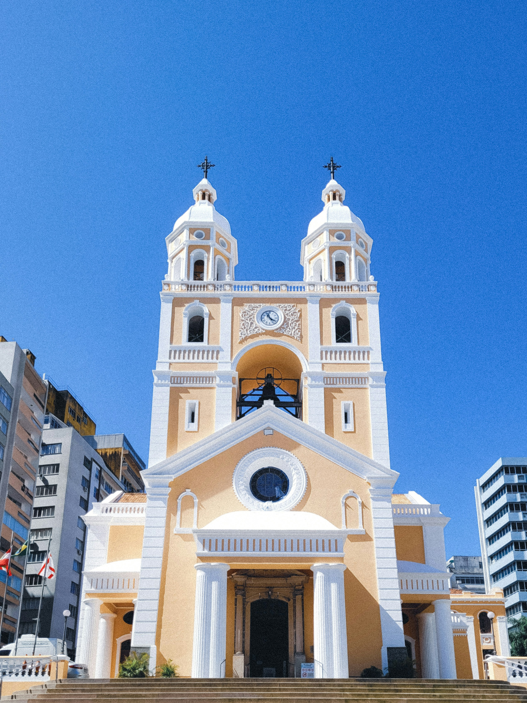
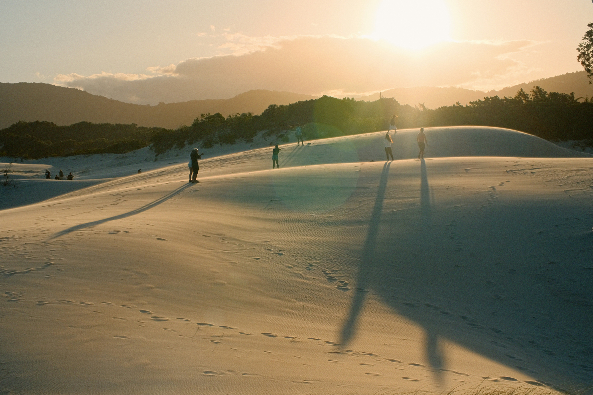
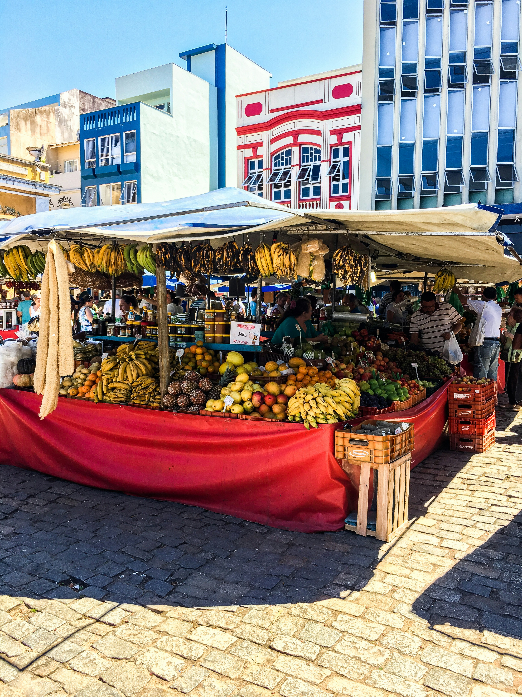
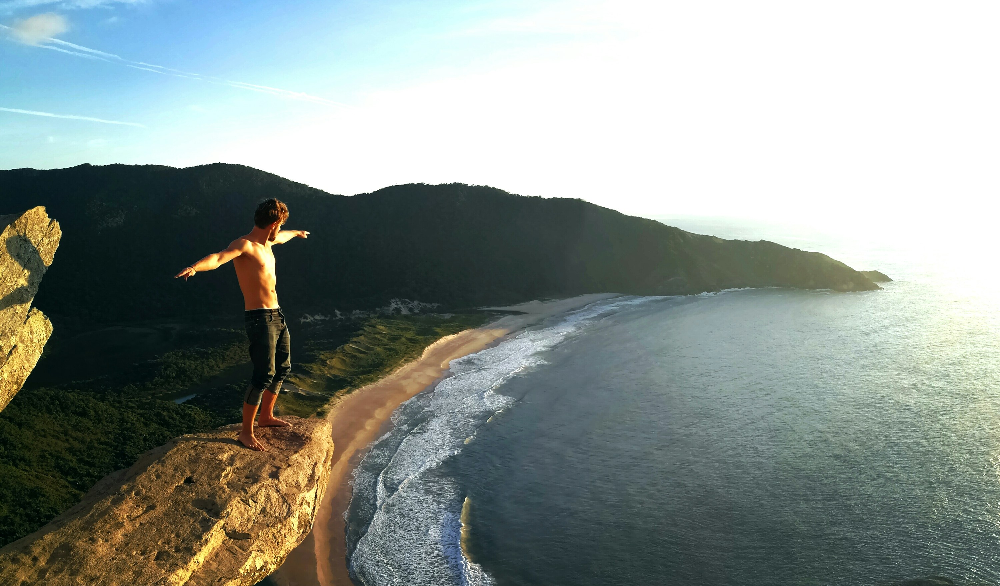

Florianópolis é um dos principais destinos turísticos do Brasil, conhecida por suas belezas naturais, como praias, dunas, lagoas, trilhas e cachoeiras. Por isso, é chamada de “Ilha da Magia”.
Olhe alguns pontos turísticos:
A Catedral Metropolitana de Florianópolis, também conhecida como Catedral Metropolitana Nossa Senhora do Desterro, é um dos principais pontos históricos e religiosos da cidade.
Ela fica no Centro de Florianópolis e foi construída no local da primeira igreja da cidade. Sua arquitetura mistura estilos antigos e passou por várias reformas ao longo do tempo.
Além de ser um importante símbolo religioso, a catedral também faz parte da história da colonização e do desenvolvimento urbano da cidade, sendo um dos pontos turísticos mais visitados do centro.

Dunas da Joaquina ficam na Praia da Joaquina, em Florianópolis, e são um dos principais pontos turísticos da cidade. Elas são conhecidas pela areia branca e pelo cenário natural, sendo muito procuradas para a prática de sandboard (esqui na areia) e para lazer e esportes. Além da diversão, as dunas fazem parte da paisagem típica da região e ajudam a compor as belezas naturais que tornam Florianópolis conhecida como a “Ilha da Magia”

No Centro de Florianópolis existem feiras tradicionais que fazem parte da cultura e do turismo da cidade. Elas oferecem produtos típicos, artesanato e comidas locais. Uma das mais conhecidas é a Feira do Largo da Alfândega, onde é possível encontrar artesanato, lembranças, roupas e produtos regionais. Também há feiras de produtos coloniais e gastronômicos, com destaque para itens da cultura açoriana, como doces, peixes e frutos do mar. Essas feiras ajudam a valorizar a cultura local e são pontos muito visitados por moradores e turistas

A Praia do Santinho fica no norte de Florianópolis e é conhecida por sua natureza preservada, mar limpo e paisagens bonitas. Ela é muito procurada por turistas para surfe, trilhas e contato com a natureza, já que tem ondas fortes e áreas de mata nativa ao redor. Um dos destaques da praia são as inscrições rupestres em pedras, feitas por povos antigos, o que também dá um valor histórico ao local. Assim, a Praia do Santinho une natureza, esporte e história, sendo um dos pontos turísticos mais importantes do norte da ilha.
A Lagoinha do Leste é uma das praias mais bonitas e preservadas de Florianópolis. Ela é conhecida pelo acesso mais difícil, feito por trilhas ou barco, o que ajuda a manter a natureza bem conservada. O local tem mar agitado, vegetação nativa e uma paisagem bem selvagem, sendo muito procurado por quem gosta de aventura e ecoturismo. Um dos pontos mais famosos é a pedra da Lagoinha, onde os turistas costumam subir para tirar fotos, pois de lá é possível ver uma vista incrível da praia e da natureza ao redor.

A Ponte Hercílio Luz é um dos principais cartões-postais de Florianópolis e símbolo histórico de Santa Catarina. Ela foi inaugurada em 1926 e liga a ilha ao continente. Após um período fechada para reformas, a ponte foi reaberta e hoje é um importante ponto turístico da cidade. Em alguns momentos, como finais de semana e eventos especiais, é possível atravessar a ponte a pé, aproveitando a vista e o pôr do sol.